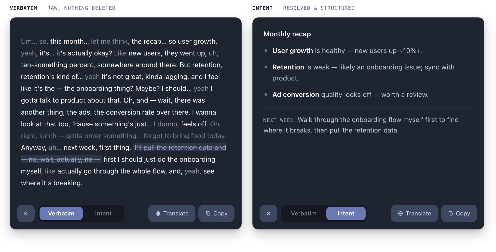

Voice-first IME
Intent-aware input for desktop AI workflows. From speech-to-text toward speech-to-intent — two modes that let you keep every word, or resolve the mess into clean, usable meaning.
Input quality is no longer about typing speed
As AI becomes a daily collaborator, what matters is how fast and how faithfully you can hand it a complex intent.
As AI becomes a daily collaborator, input quality is no longer only about typing speed — it's about how completely you can express intent.
On desktop, the core workflows are still office productivity and development. Users need to get complex intent across quickly — especially for long-form writing and Vibe Coding prompts, where speaking is far faster than typing.
Raw transcription isn't usable text
Speech-to-text captures words literally. But real speech never arrives clean — and cleaning it up is work.
Raw voice transcription captures words literally, but real speech includes:
- Self-corrections — “month over month, sorry, year over year.”
- Fillers and false starts — “um,” “like,” “let me think.”
- Topic drift — a lunch tangent in the middle of a business recap.
This creates heavy cleanup work before the text becomes usable.
Quotes, numbers, commitments — you need it word-for-word.
Drafting, summarizing, prompt writing — you need clear intent, not the mess.
Two modes, one clip — nothing lost
A desktop-first, intent-aware voice input that gives explicit control between keeping every word and resolving it into clean intent.
The goal: a voice input experience that —
- supports the right tradeoff by scenario, instead of one fixed output style;
- keeps users aware of the transformation happening to their words;
- allows fast switching and verification between views.
Preserves wording fidelity for precision-sensitive tasks — quotes, numbers, commitments.
Resolves spoken repairs, drops low-value noise, and outputs a cleaner structure for drafting.

Verbatim shows everything actually said — raw. The styling never rewrites; it only marks what each span becomes in Intent. Three semantic tiers, three visual treatments — never one blanket strikethrough.
.fill.drop.fixWhat Intent Mode actually does
Click a capability to see its raw → output transformation. Same spoken input on top, resolved output below.
We should review onboarding and investigate the drop in ad conversion quality.
See it on real speech
Three scenarios the design has to handle — from a single slipped word to a whole rambling monologue.
Demo · modes & cleanup
Getting to first success
A new user reaches their first win by solving exactly three things — nothing more in the way.
Demo · first-run onboarding
From character entry to intent transfer
Reframing voice from character entry to intent transfer means faster capture, lower post-edit cost, and higher trust in the generated text — because you can always see and recover what was actually said.
Driven from insight to execution: problem framing, interaction model, capability logic, and an implementation-aligned demo. Not only a UI concept — shipped as a working, demonstrable behavior layer.